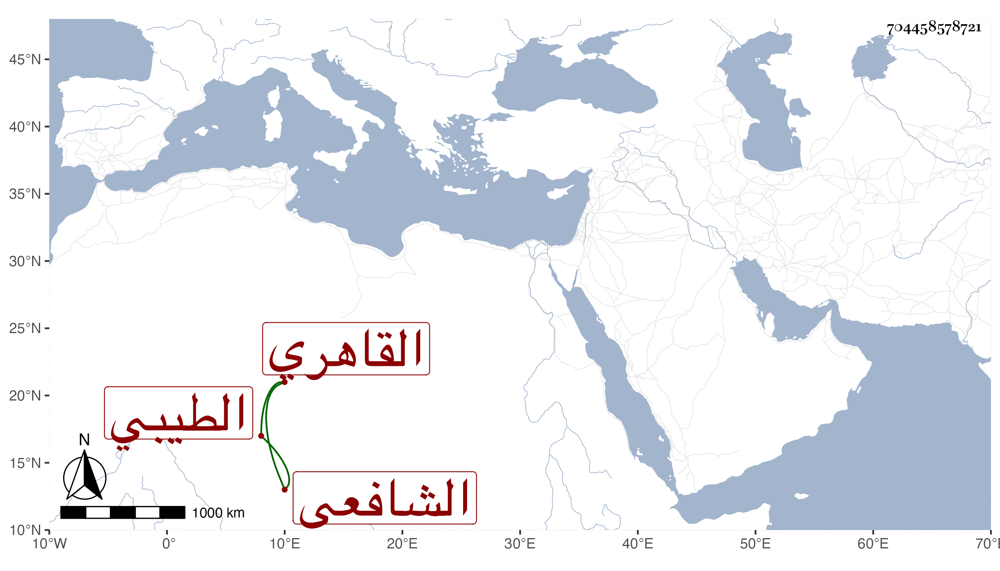

0902Sakhawi.DawLamic.ITO20230111-ara1.EIS1600.704458578721
Biography ID: 704458578721
214
محمد بن أحمد بن محمد الشمس أبو عبد الله الطيبي ثم القاهري الشافعي ووجدت بخطى في موضع آخر أنه محمد بن علي فالله أعلم . حفظ القرآن والمنهاج وأخذ الفقه عن العلم البلقيني وأذن له في الإقراء ، وصحب أبا عبد الله الغمري وأم بجامعه وقتا وكذا قرأ على السوبيني أشياء من تصانيفه وكتبها وأذن له ولازم العبادة والتهجد والأوراد والأنعزال عن الناس مع التقلل بحيث أشتهر بالصلاح وأم بصوفية سعيد السعداء العصر خاصة لكونه كان أحد صوفيتها وكذا تنزل في صوفية الطنبذية بالصحراء وخطب في جامع المتبولي بالبركة وجامع الزاهد وكانت على خطبته حلاوة وله نورانية وقبول وكتب بخطه نكتا وفوائد وربما أقرأ . مات في آخر يوم من رمضان سنة اثنتين وسبعين وأظنه قارب الستين ودفن من الغد بعد صلاة العيد بتربة ابن شرف الوراق بالقرب من الاهناسية بباب النصر ونعم الرجل كان فقد كان يحبنا ونحبه رحمه الله ونفعنا به .
